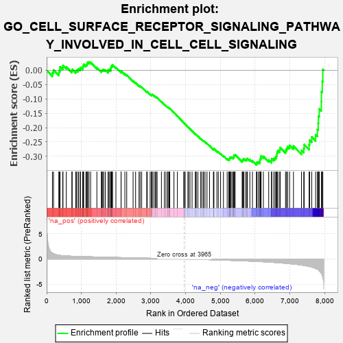
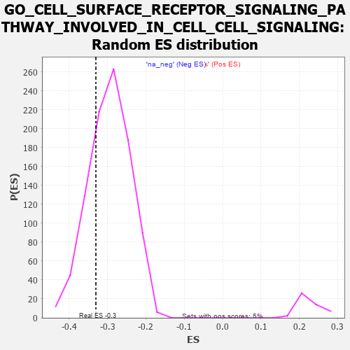

| | | Dataset | 7d |
| Phenotype | NoPhenotypeAvailable |
| Upregulated in class | na_neg |
| GeneSet | GO_CELL_SURFACE_RECEPTOR_SIGNALING_PATHWAY_INVOLVED_IN_CELL_CELL_SIGNALING |
| Enrichment Score (ES) | -0.3302617 |
| Normalized Enrichment Score (NES) | -1.1191257 |
| Nominal p-value | 0.25657204 |
| FDR q-value | 0.7303452 |
| FWER p-Value | 1.0 |
Table: GSEA Results Summary

Fig 1: Enrichment plot: GO_CELL_SURFACE_RECEPTOR_SIGNALING_PATHWAY_INVOLVED_IN_CELL_CELL_SIGNALING
Profile of the Running ES Score & Positions of GeneSet Members on the Rank Ordered List
| PROBE | GENE SYMBOL | GENE_TITLE | RANK IN GENE LIST | RANK METRIC SCORE | RUNNING ES | CORE ENRICHMENT | | 1 | AXIN1 | | | 166 | 1.159 | -0.0076 | No |
| 2 | WNT16 | | | 198 | 1.072 | 0.0011 | No |
| 3 | GSK3A | | | 351 | 0.745 | -0.0095 | No |
| 4 | LGR6 | | | 360 | 0.738 | -0.0018 | No |
| 5 | AXIN2 | | | 383 | 0.713 | 0.0038 | No |
| 6 | MESD | | | 384 | 0.713 | 0.0122 | No |
| 7 | LEO1 | | | 463 | 0.655 | 0.0099 | No |
| 8 | LRP1 | | | 470 | 0.648 | 0.0168 | No |
| 9 | NLE1 | | | 565 | 0.609 | 0.0120 | No |
| 10 | NOTUM | | | 726 | 0.553 | -0.0020 | No |
| 11 | WDR61 | | | 734 | 0.549 | 0.0036 | No |
| 12 | PORCN | | | 838 | 0.522 | -0.0034 | No |
| 13 | AMFR | | | 856 | 0.518 | 0.0005 | No |
| 14 | WLS | | | 907 | 0.505 | 0.0001 | No |
| 15 | NLK | | | 911 | 0.504 | 0.0057 | No |
| 16 | CTR9 | | | 964 | 0.492 | 0.0048 | No |
| 17 | DVL3 | | | 971 | 0.490 | 0.0098 | No |
| 18 | AKT1 | | | 1040 | 0.476 | 0.0067 | No |
| 19 | YAP1 | | | 1041 | 0.475 | 0.0124 | No |
| 20 | MEF2C | | | 1054 | 0.473 | 0.0164 | No |
| 21 | FZD10 | | | 1065 | 0.470 | 0.0207 | No |
| 22 | SRC | | | 1128 | 0.459 | 0.0182 | No |
| 23 | PSMD7 | | | 1152 | 0.454 | 0.0206 | No |
| 24 | CCNY | | | 1168 | 0.451 | 0.0240 | No |
| 25 | PSMD2 | | | 1181 | 0.450 | 0.0278 | No |
| 26 | CDK14 | | | 1217 | 0.444 | 0.0285 | No |
| 27 | CDC73 | | | 1265 | 0.436 | 0.0277 | No |
| 28 | RBX1 | | | 1445 | 0.401 | 0.0095 | No |
| 29 | FZD1 | | | 1574 | 0.379 | -0.0024 | No |
| 30 | PAF1 | | | 1588 | 0.376 | 0.0003 | No |
| 31 | BIRC8 | | | 1615 | 0.372 | 0.0014 | No |
| 32 | DDB1 | | | 1642 | 0.366 | 0.0024 | No |
| 33 | WWOX | | | 1688 | 0.359 | 0.0009 | No |
| 34 | AGO2 | | | 1767 | 0.343 | -0.0051 | No |
| 35 | LRP5 | | | 1769 | 0.342 | -0.0012 | No |
| 36 | TLE4 | | | 1775 | 0.341 | 0.0022 | No |
| 37 | PSMD4 | | | 1811 | 0.335 | 0.0017 | No |
| 38 | RTF1 | | | 1844 | 0.329 | 0.0015 | No |
| 39 | AP2S1 | | | 1846 | 0.329 | 0.0053 | No |
| 40 | TCF7 | | | 1848 | 0.328 | 0.0090 | No |
| 41 | PSMD6 | | | 1858 | 0.326 | 0.0117 | No |
| 42 | TLE3 | | | 1863 | 0.325 | 0.0150 | No |
| 43 | GLRA2 | | | 1892 | 0.321 | 0.0152 | No |
| 44 | CUL3 | | | 1893 | 0.321 | 0.0190 | No |
| 45 | ROR1 | | | 1993 | 0.306 | 0.0100 | No |
| 46 | JADE1 | | | 2141 | 0.286 | -0.0055 | No |
| 47 | PSME4 | | | 2143 | 0.285 | -0.0022 | No |
| 48 | PSMF1 | | | 2251 | 0.268 | -0.0128 | No |
| 49 | GSKIP | | | 2304 | 0.259 | -0.0164 | No |
| 50 | UBAC2 | | | 2488 | 0.229 | -0.0371 | No |
| 51 | PSMD5 | | | 2560 | 0.218 | -0.0436 | No |
| 52 | MITF | | | 2659 | 0.205 | -0.0538 | No |
| 53 | KDM6A | | | 2690 | 0.200 | -0.0552 | No |
| 54 | CUL1 | | | 2735 | 0.193 | -0.0586 | No |
| 55 | DAPK3 | | | 2880 | 0.169 | -0.0750 | No |
| 56 | FGFR2 | | | 2895 | 0.167 | -0.0749 | No |
| 57 | GID8 | | | 2978 | 0.153 | -0.0836 | No |
| 58 | BRD7 | | | 3018 | 0.147 | -0.0868 | No |
| 59 | WNT4 | | | 3023 | 0.146 | -0.0856 | No |
| 60 | PIAS4 | | | 3034 | 0.145 | -0.0852 | No |
| 61 | LEF1 | | | 3037 | 0.144 | -0.0837 | No |
| 62 | HDAC1 | | | 3086 | 0.138 | -0.0882 | No |
| 63 | MTMR2 | | | 3126 | 0.133 | -0.0917 | No |
| 64 | SFRP5 | | | 3154 | 0.129 | -0.0936 | No |
| 65 | PSMD9 | | | 3179 | 0.125 | -0.0952 | No |
| 66 | SMAD3 | | | 3303 | 0.105 | -0.1097 | No |
| 67 | DDX3X | | | 3388 | 0.091 | -0.1194 | No |
| 68 | AP2A2 | | | 3433 | 0.085 | -0.1240 | No |
| 69 | CDK5 | | | 3480 | 0.080 | -0.1289 | No |
| 70 | GLI1 | | | 3489 | 0.079 | -0.1290 | No |
| 71 | UBR5 | | | 3518 | 0.074 | -0.1317 | No |
| 72 | GRK6 | | | 3525 | 0.072 | -0.1317 | No |
| 73 | PIN1 | | | 3543 | 0.069 | -0.1330 | No |
| 74 | SKP1 | | | 3663 | 0.049 | -0.1477 | No |
| 75 | SKI | | | 3762 | 0.032 | -0.1599 | No |
| 76 | GPC6 | | | 3950 | 0.002 | -0.1838 | No |
| 77 | PPM1A | | | 3953 | 0.002 | -0.1840 | No |
| 78 | GLRA1 | | | 3957 | 0.001 | -0.1844 | No |
| 79 | VPS35 | | | 3989 | -0.006 | -0.1883 | No |
| 80 | SFRP2 | | | 4065 | -0.018 | -0.1977 | No |
| 81 | WNT2 | | | 4084 | -0.021 | -0.1997 | No |
| 82 | ABL1 | | | 4125 | -0.027 | -0.2045 | No |
| 83 | AP2B1 | | | 4185 | -0.039 | -0.2116 | No |
| 84 | PSME3 | | | 4280 | -0.056 | -0.2230 | No |
| 85 | WNT11 | | | 4282 | -0.056 | -0.2225 | No |
| 86 | STRN | | | 4307 | -0.060 | -0.2248 | No |
| 87 | ADRB2 | | | 4352 | -0.068 | -0.2297 | No |
| 88 | VPS29 | | | 4433 | -0.082 | -0.2389 | No |
| 89 | LRRK2 | | | 4467 | -0.087 | -0.2421 | No |
| 90 | ILK | | | 4510 | -0.096 | -0.2464 | No |
| 91 | WNT5B | | | 4517 | -0.098 | -0.2460 | No |
| 92 | APC | | | 4558 | -0.107 | -0.2498 | No |
| 93 | GATA3 | | | 4614 | -0.120 | -0.2555 | No |
| 94 | PTK7 | | | 4687 | -0.136 | -0.2631 | No |
| 95 | TERT | | | 4801 | -0.157 | -0.2757 | No |
| 96 | TNIK | | | 4804 | -0.158 | -0.2741 | No |
| 97 | P2RX4 | | | 4813 | -0.161 | -0.2732 | No |
| 98 | MARK2 | | | 4899 | -0.177 | -0.2820 | No |
| 99 | FZD4 | | | 4940 | -0.186 | -0.2849 | No |
| 100 | KLF4 | | | 5005 | -0.198 | -0.2908 | No |
| 101 | DRD2 | | | 5088 | -0.221 | -0.2987 | No |
| 102 | SMO | | | 5195 | -0.247 | -0.3093 | No |
| 103 | TNKS2 | | | 5239 | -0.254 | -0.3118 | No |
| 104 | SSH1 | | | 5254 | -0.258 | -0.3106 | No |
| 105 | PTEN | | | 5262 | -0.261 | -0.3084 | No |
| 106 | RIMS2 | | | 5272 | -0.265 | -0.3064 | No |
| 107 | CELF4 | | | 5275 | -0.266 | -0.3035 | No |
| 108 | MAGI2 | | | 5295 | -0.269 | -0.3028 | No |
| 109 | NPY2R | | | 5331 | -0.281 | -0.3039 | No |
| 110 | MPP2 | | | 5367 | -0.288 | -0.3050 | No |
| 111 | GRIN1 | | | 5381 | -0.291 | -0.3032 | No |
| 112 | FZD5 | | | 5386 | -0.292 | -0.3003 | No |
| 113 | DLG4 | | | 5388 | -0.293 | -0.2970 | No |
| 114 | LATS1 | | | 5412 | -0.298 | -0.2964 | No |
| 115 | PPM1B | | | 5422 | -0.300 | -0.2940 | No |
| 116 | ROR2 | | | 5626 | -0.353 | -0.3158 | No |
| 117 | ASPM | | | 5637 | -0.358 | -0.3129 | No |
| 118 | WNK1 | | | 5650 | -0.362 | -0.3101 | No |
| 119 | PSMD1 | | | 5674 | -0.367 | -0.3087 | No |
| 120 | DGKI | | | 5725 | -0.384 | -0.3106 | No |
| 121 | TLR2 | | | 5761 | -0.395 | -0.3104 | No |
| 122 | GLRB | | | 5776 | -0.398 | -0.3075 | No |
| 123 | ARL6 | | | 5847 | -0.417 | -0.3115 | No |
| 124 | STK11 | | | 5922 | -0.443 | -0.3158 | No |
| 125 | RAC1 | | | 6036 | -0.484 | -0.3245 | Yes |
| 126 | FZD8 | | | 6051 | -0.490 | -0.3206 | Yes |
| 127 | UBB | | | 6090 | -0.503 | -0.3195 | Yes |
| 128 | IFT80 | | | 6135 | -0.515 | -0.3190 | Yes |
| 129 | TNKS | | | 6138 | -0.516 | -0.3132 | Yes |
| 130 | STK4 | | | 6145 | -0.518 | -0.3078 | Yes |
| 131 | EGR1 | | | 6165 | -0.527 | -0.3041 | Yes |
| 132 | GRID2 | | | 6170 | -0.528 | -0.2983 | Yes |
| 133 | CDC42 | | | 6236 | -0.548 | -0.3002 | Yes |
| 134 | TRPM4 | | | 6390 | -0.612 | -0.3125 | Yes |
| 135 | GLRA3 | | | 6469 | -0.648 | -0.3149 | Yes |
| 136 | SOX2 | | | 6477 | -0.652 | -0.3081 | Yes |
| 137 | KANK1 | | | 6536 | -0.678 | -0.3075 | Yes |
| 138 | P2RX5 | | | 6576 | -0.699 | -0.3042 | Yes |
| 139 | MKS1 | | | 6607 | -0.715 | -0.2996 | Yes |
| 140 | SCYL2 | | | 6621 | -0.724 | -0.2927 | Yes |
| 141 | WWTR1 | | | 6631 | -0.729 | -0.2853 | Yes |
| 142 | RAB5A | | | 6655 | -0.741 | -0.2795 | Yes |
| 143 | EGFR | | | 6708 | -0.765 | -0.2771 | Yes |
| 144 | GSK3B | | | 6719 | -0.768 | -0.2693 | Yes |
| 145 | CBY1 | | | 6874 | -0.851 | -0.2789 | Yes |
| 146 | WIF1 | | | 6904 | -0.870 | -0.2724 | Yes |
| 147 | SNX3 | | | 6934 | -0.893 | -0.2655 | Yes |
| 148 | NPHP4 | | | 6991 | -0.931 | -0.2617 | Yes |
| 149 | RYK | | | 7102 | -1.000 | -0.2640 | Yes |
| 150 | CYLD | | | 7333 | -1.206 | -0.2792 | Yes |
| 151 | CELA1 | | | 7399 | -1.265 | -0.2726 | Yes |
| 152 | UBC | | | 7410 | -1.274 | -0.2588 | Yes |
| 153 | GRIK2 | | | 7552 | -1.471 | -0.2595 | Yes |
| 154 | CALM1 | | | 7567 | -1.499 | -0.2436 | Yes |
| 155 | PKD1 | | | 7628 | -1.611 | -0.2322 | Yes |
| 156 | PLPP3 | | | 7740 | -1.876 | -0.2243 | Yes |
| 157 | GRIK5 | | | 7792 | -2.044 | -0.2067 | Yes |
| 158 | DCDC2 | | | 7813 | -2.099 | -0.1844 | Yes |
| 159 | PKD2 | | | 7822 | -2.167 | -0.1598 | Yes |
| 160 | DLX5 | | | 7845 | -2.378 | -0.1345 | Yes |
| 161 | PLCB1 | | | 7904 | -2.841 | -0.1084 | Yes |
| 162 | PSMD3 | | | 7907 | -2.887 | -0.0746 | Yes |
| 163 | PSMD8 | | | 7931 | -3.286 | -0.0387 | Yes |
| 164 | XIAP | | | 7947 | -3.696 | 0.0031 | Yes |
Table: GSEA details [plain text format]

Fig 2: GO_CELL_SURFACE_RECEPTOR_SIGNALING_PATHWAY_INVOLVED_IN_CELL_CELL_SIGNALING: Random ES distribution
Gene set null distribution of ES for GO_CELL_SURFACE_RECEPTOR_SIGNALING_PATHWAY_INVOLVED_IN_CELL_CELL_SIGNALING